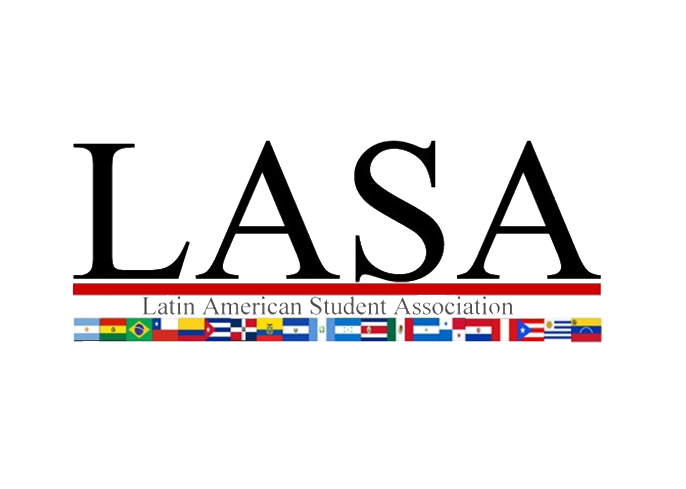
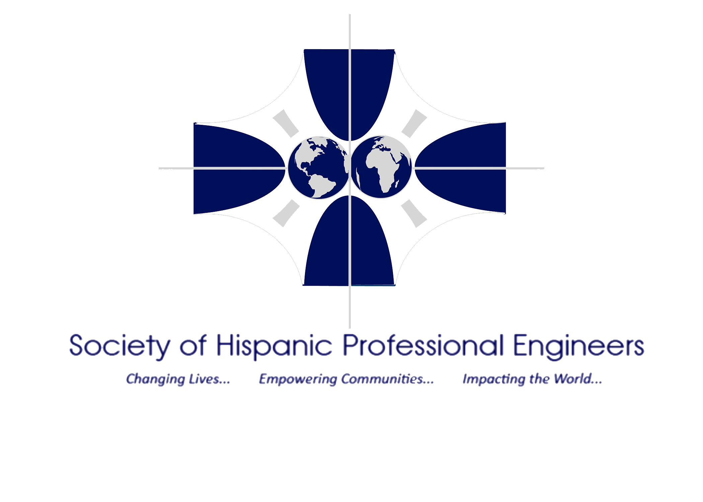
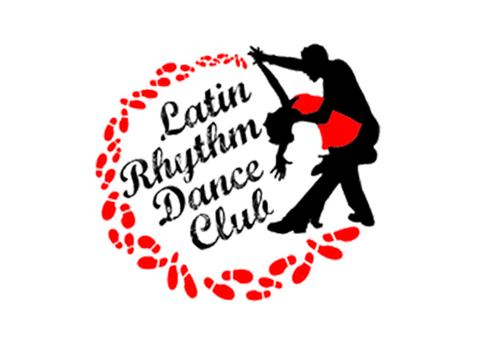
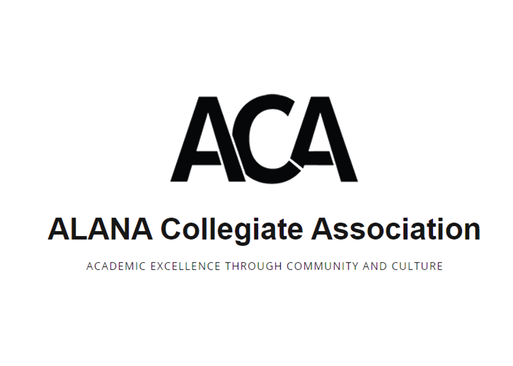

}

The Latin American Student Association, also called LASA, was established in 1985 at the Rochester Institute of Technology and functions as an institute organization under the African American Latin American Native American Student Association, or ACA. We provide opportunities for our members to learn, embrace, and share their Latin heritage, while at the same time creating and supporting cultural awareness in a social and familial atmosphere. Membership is open to regularly enrolled undergraduates, graduate students, post-graduates, faculty, and staff. We generally meet bi-weekly, and co-sponsor several events with affiliated organizations.

SHPE changes lives by empowering the Hispanic community to realize its fullest potential and to impact the world through STEM awareness, access, support and development.

The Latin Rhythm Dance Club at RIT is all about the common latin dances (Salsa, bachata, merenge, etc.). We offer weekly lessons for people who want to learn how to dance, or just want to learn more. And we also have lists of events that happen on and off campus for those who just want more opportunities to dance.

The purpose of the ALANA Collegiate Association is to serve as a liaison between the ALANA student population and RIT administration; to advocate for ALANA students and address the needs that are unique to the ALANA student experience; to provide access to and awareness of resources on campus to improve ALANA student academic performance; to inform ALANA students of financial, cultural, educational, political and employment opportunities; to contribute to the academic, leadership and social development of ALANA students; to encourage a sense of pride in ALANA culture on RIT’s campus and raise awareness to non-ALANA students of ALANA student experiences and culture; and to promote and support the recruitment and enrollment of ALANA students and recruitment and hiring of ALANA faculty and staff.